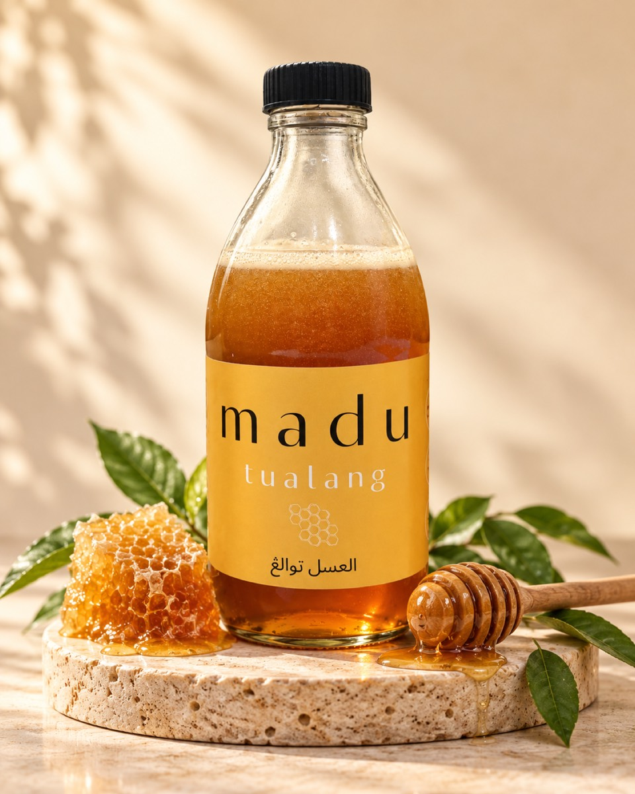
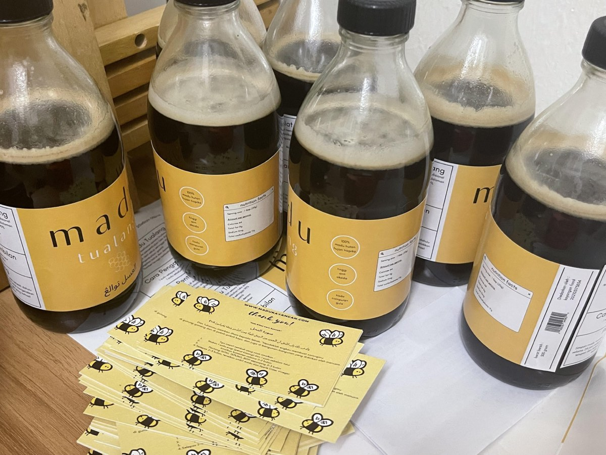
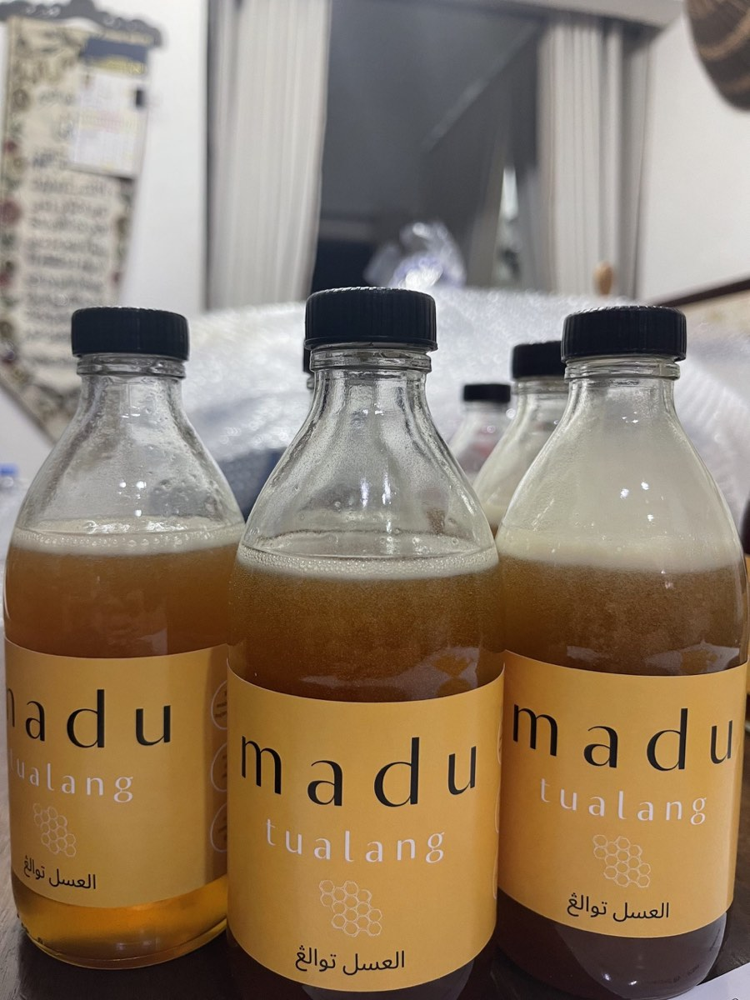

Manis semula jadi
Madu hutan asli tanpa campuran gula tiruan. Rasa madu, seperti yang sepatutnya.
✳Manis yang datang dari alam. Madu Kayangan membawa keaslian madu hutan ke dalam rutin harian anda.

Daripada hutan Tanah Melayu kepada meja anda. Keaslian yang boleh dinikmati, satu sudu pada satu masa.
Madu hutan asli tanpa campuran gula tiruan. Rasa madu, seperti yang sepatutnya.
✳
Keaslian dalam setiap botol.Madu tualang dari hutan Tanah Melayu. Sebahagian kecil alam, untuk rutin anda.
❋Mulakan dengan satu botol atau pilih pakej lebih jimat untuk dikongsi bersama yang tersayang.

BOTOL ASLI. CERITA SEBENAR.Madu Kayangan lahir daripada perjalanan peribadi mencari rutin yang lebih baik. Kini, kami berkongsi madu hutan asli sebagai sebahagian daripada amalan harian yang sederhana.
Kami percaya perkara yang baik bermula dengan keaslian — pada madu yang anda nikmati, dan pada layanan yang anda terima.
Kenali kami lebih dekat ↗Nikmati rasa madu terus daripada sudu, mengikut panduan pada label.
Campurkan dalam air suam untuk menikmati kemanisan yang semula jadi.
Lengkapkan sarapan atau hadiahkan satu botol kepada yang tersayang.
Tanya tentang madu, pilih pakej, atau semak penghantaran.
Pasukan Madu Kayangan hanya satu mesej sahaja.
Masih ada soalan? Kami sedia berbual.
Tanya pasukan kami ↗Madu Kayangan menawarkan madu hutan asli Tanah Melayu, dengan madu tualang dan tanpa campuran gula tiruan seperti dinyatakan pada laman rasmi.
Pilih pakej di kedai mini, semak bakul, dan lengkapkan maklumat penghantaran. Anda boleh sediakan mesej pesanan untuk WhatsApp, atau terus hubungi pasukan kami.
Pakej 1 botol ialah RM64, 2 botol RM114 (jimat RM14), dan 3 botol RM167 (jimat RM25) dengan percuma pos, mengikut tawaran di laman rasmi. Pasukan kami akan mengesahkan tawaran dan liputan penghantaran.
Kos penghantaran untuk pakej 1 dan 2 botol, liputan percuma pos, stok, dan kaedah pembayaran akan disahkan oleh pasukan Madu Kayangan melalui WhatsApp sebelum anda membuat bayaran.
Ikuti panduan pada label botol. Tutup botol selepas digunakan dan simpan di tempat yang kering, jauh daripada cahaya matahari terus. Hubungi pasukan kami untuk panduan produk yang lebih terperinci.